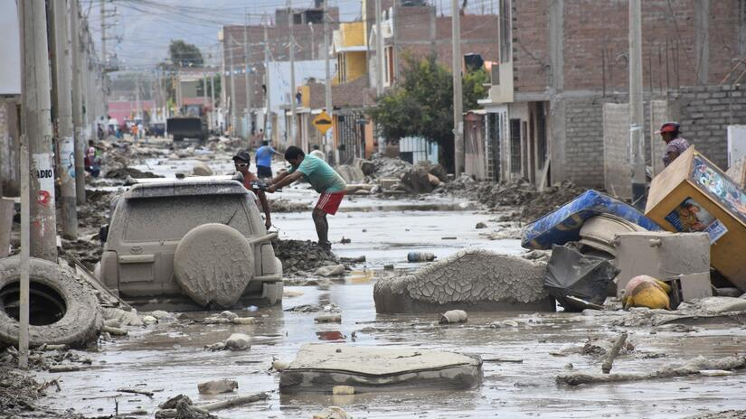

Es el Clima · Trabalho PL1 · 2026
Previsão de El Niño e La Niña
Como esses dois fenômenos do Oceano Pacífico se formam, onde acontecem, como são previstos e o que mudam no clima do Brasil.
Explorar o conteúdo
Por que estudar o El Niño e a La Niña?
São mudanças naturais na temperatura do Pacífico que alteram a chuva e o calor em vários continentes. No Brasil, costumam trazer chuva demais ao Sul e seca ao Norte e Nordeste.
Em 2026 um El Niño forte está em desenvolvimento. Entender como ele é previsto ajuda a se preparar para enchentes, secas e queimadas.
El Niño em números
Explore o site
- El Niño e La Niña: o que são, como são previstos e um quiz para testar o que aprendeu.
- Gráfico: as temperaturas do mar e o efeito na chuva em cada região do Brasil.
- Equipe: quem fez o projeto e o que cada pessoa criou.